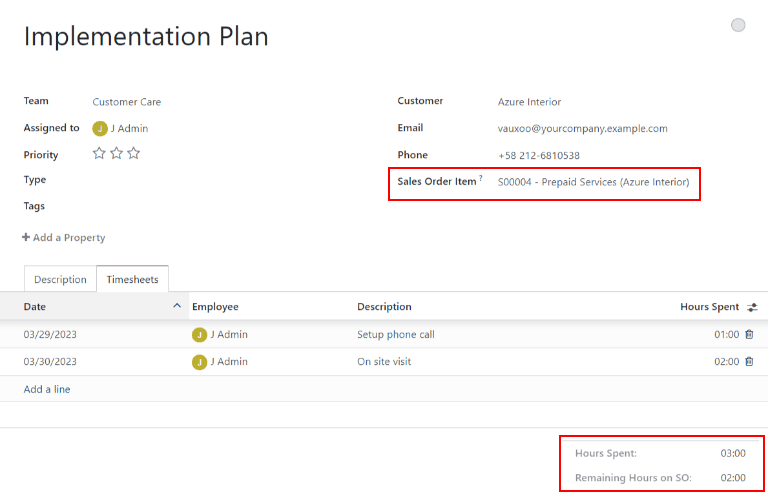
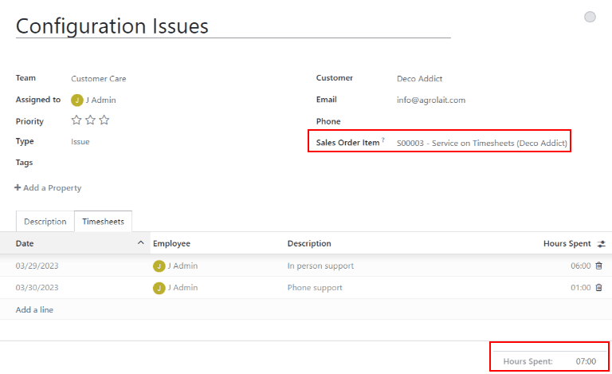

Track and bill time¶
Odoo Helpdesk provides teams with the ability to track the amount of hours spent working on a ticket, and to bill a customer for that time. Through integrations with the Sales, Timesheets and Accounting applications, customers can be charged once the work is completed, or before it has even begun.
Warning
Since the Track & Bill Time features require integration with other applications, enabling them may result in the installation of additional modules (or applications).
Installing a new application on a One-App-Free database triggers a 15-day trial. At the end of the trial, if a paid subscription has not been added to the database, it will no longer be active or accessible.
Configure track and bill time features¶
Before a customer can be invoiced for support services, the Track & Bill Time features must first be enabled. These features must be enabled on each Helpdesk team where they will be utilized.
Enable track and bill time on a helpdesk team¶
To view and enable the Track & Bill Time features on a Helpdesk team, first navigate to . Then select a team from the list or create a new one. This will reveal a team’s settings page.
On the team’s settings page, scroll to the Track & Bill Time section. Check the boxes labeled Timesheets and Time Billing.
Once the Timesheets box is checked, a new field appears, labeled Project.
The project selected in this field is where all the timesheets for this team’s tickets will be recorded. Click into the drop-down menu to select a Project.
To create a new project where the timesheets will be recorded, click into the drop-down menu, type a name for the project, and then click Create.

Configure service products¶
When the Time Billing feature is enabled, a new product is created in the Sales app
called Service on Timesheets. This product can be found under . Search for Service on Timesheets in the Search… bar. This is
the product that will be used when invoicing for post-paid support services after they have been
completed.
Select Service on Timesheets from the product page. This reveals the product detail form. The product is configured with the Product Type set to Service and the Invoicing Policy set to Based on Timesheets.

In order to invoice for support services before the work has been completed (also known as prepaid support services), a separate product with a different invoicing policy must be created.
To create a new service product, go to and click New. This will reveal a blank product detail form.
On the new product form, add a Product Name, and set the Product Type to Service. Then, set the Invoicing Policy to Prepaid/Fixed Price. This means an invoice can be generated and payment can be received for this product before any timesheets entries have been recorded for these services.

Finally, set the Sales Price, and confirm that the Unit of Measure is set to Hours.
Invoice prepaid support services¶
When support services are billed on a fixed price, an invoice can be created before any work is completed on the issue. In this case, a service product with the invoicing policy set to Prepaid/Fixed Price would be used, just like the section above.
Create a sales order with prepaid product¶
To invoice a customer for prepaid support services, first create a sales order (SO) with the support services product. To do this, go to , which reveals a blank quotation form.
Then, fill out the quotation form with the customer information.
Go to the Order Lines tab of the quotation and click Add a Product. Then, select the prepaid services product configured in the steps above. Update the Quantity field with the number of hours.
After updating any other necessary information, Confirm the quotation. This converts the quotation into an SO.
Create and send an invoice for prepaid services¶
Once the SO has been confirmed, click the Create Invoice button. This will open a Create Invoices pop-up window.
If no down payment will be collected, the Create Invoice type can remain as Regular Invoice. If a down payment will be collected, choose between either Down payment (percentage) or Down payment (fixed amount).
When the necessary information has been entered, click Create Draft Invoice.
The invoice can then be sent to the customer for payment.
Create helpdesk ticket for prepaid services¶
To create a Helpdesk ticket for prepaid services, navigate to and click the Tickets button to reveal a specific team’s pipeline. Click New to create a new ticket.
On the blank ticket form, create a ticket Title, and enter the Customer information.
When the customer name is added, the Sales Order Item field will automatically populate with the most recent prepaid sales order item that has time remaining.
Track hours on helpdesk ticket¶
Time spent working on a Helpdesk ticket is tracked on the Timesheets tab on the specific ticket.
On the ticket detail form, click on the Timesheets tab and click Add a line. Choose an Employee, add a Description of the task, and enter the number of Hours Spent.
As new lines are added to Timesheets tab, the Remaining Hours on SO field is automatically updated.
Note
If the number of hours on the Timesheets tab exceeds the number of hours sold, the Remaining Hours of SO will turn red.
As hours are added to the Timesheets tab, they are automatically updated in the Delivered field on the SO, as well.
Invoice post-paid support services¶
When support services are billed based on the amount of time spent on an issue, an invoice cannot be created before the total number of hours required to solve the problem have been entered on a timesheet. In this case, a service product with the invoicing policy set to Based on Timesheets would be used, like the one created above.
Create a sales order with a time-tracked product¶
To invoice a customer for post-paid support services, first create a sales order (SO) with the support services product. To do this, go to .
Fill out the quotation with the customer information.
On the Order Lines tab, click Add a Product. Select the post-paid services product configured in the steps above. After updating any other necessary information, Confirm the quotation.
Note
Unlike with the prepaid services quotation, Odoo will not allow an invoice to be created at this time. That is because no services have been performed; in other words nothing has been delivered, therefore, there is nothing to invoice.
Create a helpdesk ticket for time-tracked services¶
To record a Timesheet entry for time-tracker services, go to and select the appropriate team for which these services apply.
If there is already an existing ticket for this issue, select it from the kanban view. This will open the ticket details form. If there is no existing ticket for this customer issue, click New to create a new ticket and enter the necessary customer information on the blank ticket details form.
After selecting or creating a ticket, go to the Sales Order Line drop-down menu. Select the SO created in the previous step.
Track support hours on a ticket¶
In order to create an invoice for a product based on timesheets, hours need to be tracked and recorded. At this point, the service is considered delivered. To record hours for this support service, click on the Timesheets tab of the ticket.
Click Add a Line to record a new entry. Select an Employee from the drop-down menu, and record the time spent in the Hours Spent column.
Repeat these steps as needed until all time spent on the issues has been recorded.
Create an invoice for hours tracked on a ticket¶
After the customer’s issue has been solved, and it is determined no new timesheet entries will be made, an invoice can be created, and the customer can be billed.
To do this, return to the SO by clicking on the Sales Order smart button at the top of the ticket.
Before creating the invoice, confirm that the number in the Delivered column matches the total number of Hours Spent listed in the Timesheets tab on the ticket.
Then, click Create Invoice. This will open a Create Invoices pop-up window. If no down payment will be collected, the Create Invoice type can remain as Regular Invoice. If a down payment will be collected, choose between either Down payment (percentage) or Down payment (fixed amount).
Important
Use the Timesheets Period field if this invoice should only include timesheets from a certain time period. If this field is left blank, all applicable timesheets that have not yet been invoiced will be included.
When the necessary information has been entered, click Create Invoice. The invoice can then be sent to the customer for payment.
See also